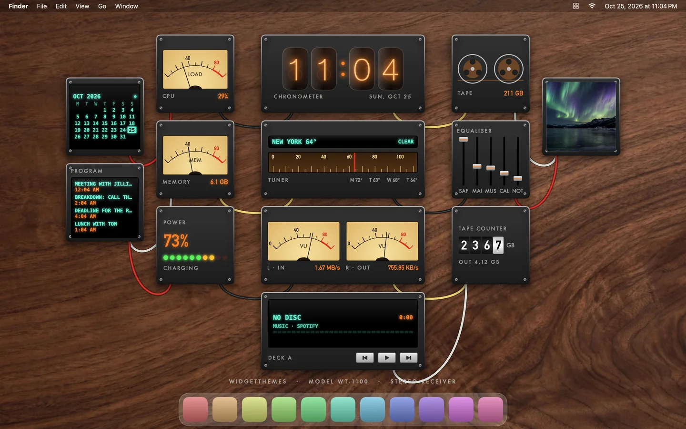
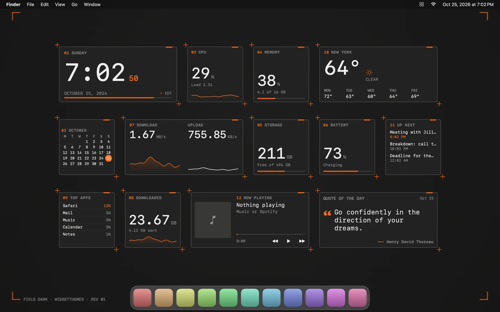
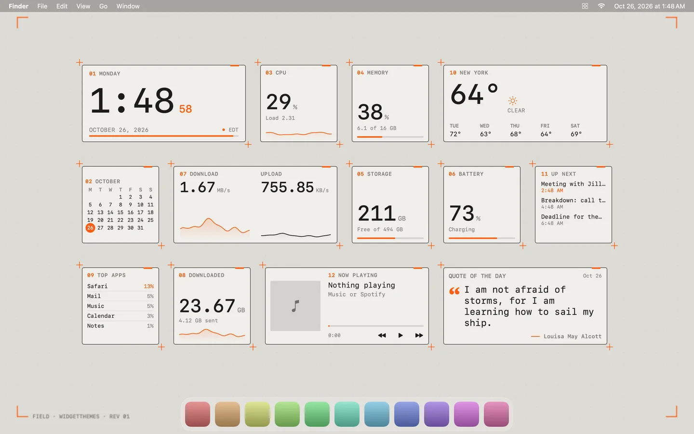

Your colour, any theme
Most themes take a new accent: curated choices like ice-blue nixie tubes for Hi-Fi or magenta for Overdrive, or any colour you like.
Free desktop widgets · Mac, and now Windows and Linux
WidgetThemes puts live widgets on your desktop: clocks, system meters, weather, music, a focus timer and more. Every one is drawn by hand in 30 complete themes, from a 1970s hi-fi to iridescent black glass.

Themes
A theme isn't a colour swap. Each one draws its own version of every widget, lays them out in its own composition, links them with its own desktop decoration, and comes with a matching wallpaper.
Playground
Pick a theme and drag its widgets around, just as you would on your own desktop. Add or remove widgets from the tray below.
Widgets
From system meters to a focus timer, each widget comes in 1:1 and 2:1 sizes, scales from 75% to 200%, and never draws text smaller than 10.5 points.
Features
Most themes take a new accent: curated choices like ice-blue nixie tubes for Hi-Fi or magenta for Overdrive, or any colour you like.
Field, Lumen and Paper each have a partner theme. Turn on Match system appearance and your widgets and wallpaper switch when your system does.
Drag the handle to compare.


Pomodoro sessions with short and long breaks, a chime and a notification, styled to match every theme.
Widgets are doors: CPU opens Activity Monitor or Task Manager, Battery opens power settings, Network opens network settings.
On a Mac, widgets you pin above your windows fade away when a window slides under them, and come back on Show Desktop.
On a Mac, each display can wear its own theme. Unplug a monitor and its widgets wait for it to come back.
Sonar sweeps, flickering neon and dancing VU needles, light on your processor and easy to switch off in Settings.
Save a desktop under My Themes, accent colours included. On a Mac, export it as a file and double-click to import.
Swift and SwiftUI on Mac; Rust and the system's own web view on Windows and Linux. It lives in the menu bar or system tray, and uses about 8% of one core on a Mac with animation on.
No account, no analytics, no tracking. Your calendar, reminders and activity never leave your computer.
Free. For macOS 14 Sonoma or later (Apple silicon or Intel), Windows 10 and 11, and Linux.
Paste this into Terminal and press Return. It downloads WidgetThemes, checks it, puts it in Applications and opens it, with no security prompts to click through.
curl -fsSL https://widgetthemes.example/install.sh | bash
No password needed. Read the script first; it's short.
You only need to do this the first time.
Windows 10 or 11, 64-bit. A preview: reminders stay on this PC, and it doesn't update itself yet.
sudo apt install ./WidgetThemes-Linux.debsudo dnf install ./WidgetThemes-Linux.rpmchmod +x WidgetThemes-Linux.AppImage) and open it.64-bit, Ubuntu 22.04 or newer or similar. Now Playing works with any player that supports MPRIS. A preview: it doesn't update itself yet.
Mac version 1.6.2, in your menu bar · Windows and Linux version 0.1 preview, in the system tray.
Yes. No trial, no subscription and no account.
Widgets update a few times a second at most and animate at a low frame rate. Animation pauses whenever widgets are covered by windows, and you can switch it off entirely in Settings.
On a Mac, only what a widget you add needs: Calendars for Events, Reminders for Reminders, Location for local weather (or type a city instead), and Automation to read and control Music or Spotify. Each one is requested the first time that widget appears, and you can decline it.
On Windows and Linux there's nothing to grant: Events reads the calendar links you paste into Settings, weather uses the city you type (or your time zone's), and Now Playing reads the system's media controls.
Your choice. By default they sit on the desktop, behind your windows. You can raise all of them, or pin individual widgets above your windows.
macOS and Windows warn about apps whose developers haven't paid for code signing: Apple's developer programme, or a Windows signing certificate. WidgetThemes is free and isn't registered with either.
On a Mac, the Terminal command is the smoothest way in: it downloads the app over a secure connection, checks it matches the published checksum, and installs it. The disk image works too, with one extra click the first time. On Windows, click More info, then Run anyway.
Mac: quit WidgetThemes from its menu bar icon (right-click, then Quit) and move it from Applications to the Trash. To remove its settings as well, delete its file in ~/Library/Preferences; its name contains "WidgetThemes".
Windows: Settings ▸ Apps ▸ Installed apps, then WidgetThemes ▸ Uninstall.
Linux: sudo apt remove widget-themes on Ubuntu or Debian, sudo dnf remove WidgetThemes on Fedora, or delete the AppImage.
Of course. Every theme looks good on its own wallpaper, but you can add any image under Wallpapers, or shuffle between them on a schedule.